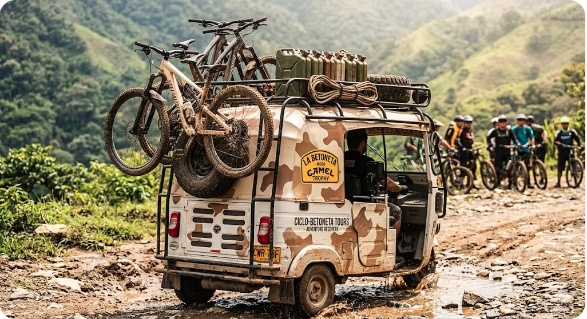
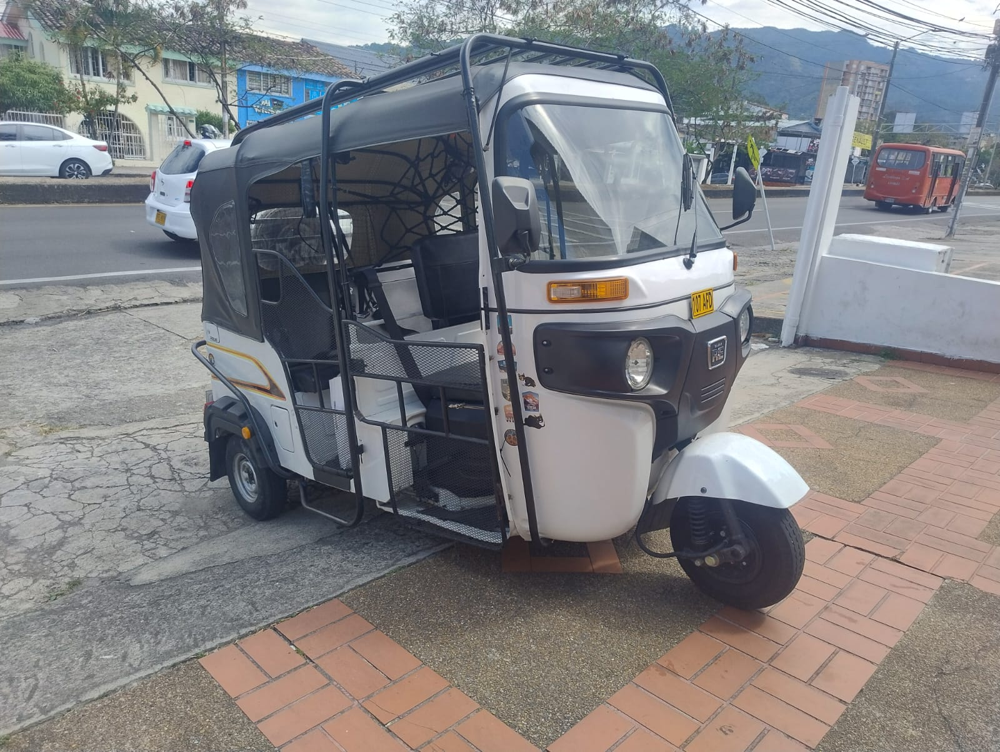
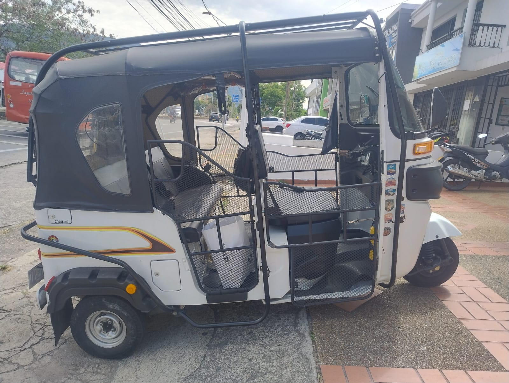

Cañón del Combeima

Un recorrido de montaña entre paisajes
andinos y caminos rurales.
Distancia de referencia: 30–36 km
Duración total: Por determinar
Detalles de la ruta
Identificador de prueba: COMBEIMA-01
Desnivel positivo: 1500 m aproximadamente
Dificultad: Alta
Servicio: transporte hasta el inicio y recogida al finalizar.
Las Amarillas

Un ascenso exigente para ciclistas
que disfrutan los grandes retos.
Distancia de referencia: 4,5 km de ascenso
Duración total: Por determinar
Detalles de la ruta
Identificador de prueba: LAS-AMARILLAS-01
Distancia: 4,5 km de ascenso
Desnivel positivo: 600 m aproximadamente
Dificultad: Muy alta
Servicio: transporte hasta el inicio y recogida al finalizar.
Chucuní – Alvarado

Una alternativa de recorrido más rodador
por los paisajes rurales del Tolima.
Distancia de referencia: 68 km
Duración total: Por determinar
Detalles de la ruta
Identificador de prueba: CHUCUNI-ALVARADO-01
Distancia: 68 km aproximadamente
Desnivel positivo: 678 m aproximadamente
Dificultad: Moderada, pendiente de verificación
Servicio: transporte hasta el inicio y recogida al finalizar.